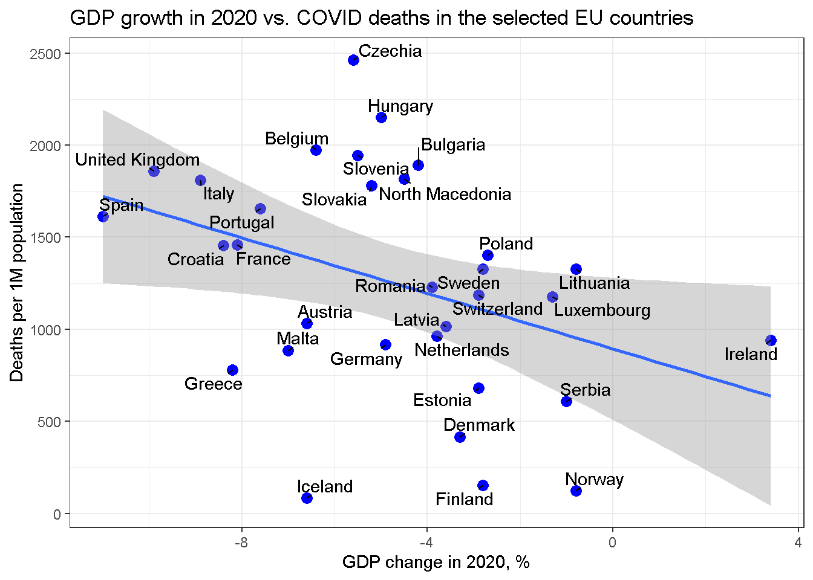

Quick look at data: спасение жизней в эпидемию vs. разрушение экономики - верна ли альтернатива?
Содержание
Постановка задачи
В борьбе с ковидом страны несут огромные экономические потери, поэтому разумно задаться вопросом насколько все это делается эффективно, т. е. как транслируются всевозможные локдауны в спасение жизней. Никакого прямого эксперимента нам недоступно, но можно сделать сравнительный анализ между странами. Логично предположить, что те страны, которые вводили самые жесткие меры должны нести наибольшие экономические потери, но одновременно и спасти максимальное число жизней. Нулевая гипотеза таким образом состоит в том, что значение смертности от ковид в пересчете на миллион населения должно положительно коррелировать с изменением ВВП.
Данные
Нужные данные можно легко получить: .
-
Данные по показателям ковида доступны с сайта Worldometes до 31 марта 2021;
-
Данные по изменению ВВП в 2020м доступны с сайта Eurostat для всех стран Европы, кроме Британии, для которой их приходится добавлять руками, беря из других источников.
Отмечу очевидный недостаток - эти данные за несколько разный временной период: показатели болезни берутся с начала прошлого года вплоть до марта этого года, а ВВП - за весь прошлый год. Однако, эпидемия во всех странах продолжается и меры противодействия ей ничуть не изменились, стало быть можно ожидать, что и тенденция изменения ВВП в 1 кв. 2021 сохранилась. Например, основные экономические потери были из-за локдаунов, которые продолжались и в начале нынешнего года. Иначе говоря, такое вольное обращение с данными может несколько изменить коэффециент корреляции, но не должно привести к качественному искажению самой зависимости.
Итак, 1) считываем данные с Worldometer.
# Data manipulation packages
library(readr)
library(data.table)
library(readxl)
library(stringr)
library(purrr)
#Visaulization packages
library(ggplot2)
library(ggrepel)
library(ggfortify)
#Web scraping packages
library(XML)
library(RCurl)
read_worldometer_world_covid_today <- function( url) {
#The only reliable way
doc <- getURL(url)
doc_tables <- readHTMLTable(doc, stringsAsFactors = FALSE) #, elFun = tryAsInteger)
colnames1 <- c( "TotalCases", "NewCases", "TotalDeaths",
"NewDeaths", "TotalRecovered", "NewRecovered", "ActiveCases", "Serious.Critical",
"Tot.Cases.1M.pop", "Deaths.1M.pop", "TotalTests", "Tests.1M.pop", "Population",
"1.Caseevery.X.ppl", "1.Deathevery.X.ppl", "1.Testevery.X.ppl" )
col_data_to_numeric <- function(x) {
r <- x%>% str_replace_all("[^[0-9\\-\\.]]", "") %>%
as.numeric()
# type.convert(na.strings="", dec = ".")
return(r)
}
dt1 <- data.table( doc_tables$main_table_countries_today )
names(dt1) <- sapply( names(dt1), function(x) {
str_replace_all(x, "[^[:alnum:]]", ".")}, USE.NAMES = FALSE)
dt1[ , c(colnames1) := { colnames1 %>% map( ~ col_data_to_numeric(get(.x))) } ]
return(dt1)
}
## Set to TRUE to parse data from Web, FALSE to load from disk
from_cache <- TRUE
if(!from_cache ) {
#Read latest data
dt.covid.world <- read_worldometer_world_covid_today( "https://www.worldometers.info/coronavirus/")
save(dt.covid.world, file=paste0(Sys.Date(), "_dt.covid.world.RData"))
write.csv(dt.covid.world, file=paste0(Sys.Date(), "_dt.covid.world.csv"))
} else {
load(file="data/2021-03-31_dt.covid.world.RData")
}
dt.covid.europe <-dt.covid.world[ Continent == "Europe" & Country.Other != "Europe"]
dt.covid.europe[ Country.Other == "UK", Country.Other := "United Kingdom"]
- Загружаем данные Eurostar
dt.gdp.change.xls <- as.data.table( read_excel("data/TEC001151617218018276.xlsx",
sheet = "Sheet 1", skip = 7))
dt.gdp.change <- dt.gdp.change.xls[ , .( `TIME`, `2020`)]
colnames(dt.gdp.change) <- c("Country", "GDP.Change.2020")
dt.gdp.change <- dt.gdp.change[ !str_detect( Country, "Euro") & !str_detect( Country, "GEO")]
dt.gdp.change[ , GDP.Change.2020 := as.numeric(GDP.Change.2020) ]
#Add UK
dt.gdp.change[ Country == "United Kingdom", GDP.Change.2020 := -9.9]
dt.gdp.change[ str_detect(Country, "Germany"), Country := "Germany"]
- Объединяем их
dt.europe.dat <- merge( dt.covid.europe, dt.gdp.change, by.x="Country.Other", by.y="Country")
Корреляции
Наиболее парадоксальный результат этого упражнения состоит в том, что корреляция противоположна ожидаемой - чем больше обрушение ВВП, тем больше жизней оказывается потеряно. Это показывают разные методы корреляции, как чувствительные к выбросам в данных, так и не чувствительные к ним.
dt.cor <- na.omit( dt.europe.dat[ , .(Deaths.1M.pop, GDP.Change.2020)] )
cor(dt.cor$Deaths.1M.pop, dt.cor$GDP.Change.2020)
## [1] -0.3802152
cor(dt.cor$Deaths.1M.pop, dt.cor$GDP.Change.2020, method="kendall")
## [1] -0.2776102
cor(dt.cor$Deaths.1M.pop, dt.cor$GDP.Change.2020, method="spearman")
## [1] -0.4162465
Вместе с тем, статистическая значимость этой корреляции низкая. Можно сделать линейную регрессию и убедиться в этом. Но опять же мы получаем отрицательный, хотя и околонулевой коэффициент.
lm1 <- lm( Deaths.1M.pop ~ GDP.Change.2020, data = dt.europe.dat)
summary( lm1 )
##
## Call:
## lm(formula = Deaths.1M.pop ~ GDP.Change.2020, data = dt.europe.dat)
##
## Residuals:
## Min 1Q Median 3Q Max
## -1306.42 -358.98 58.59 322.08 1147.90
##
## Coefficients:
## Estimate Std. Error t value Pr(>|t|)
## (Intercept) 894.35 188.92 4.734 4.93e-05 ***
## GDP.Change.2020 -75.31 33.45 -2.252 0.0318 *
## ---
## Signif. codes: 0 '***' 0.001 '**' 0.01 '*' 0.05 '.' 0.1 ' ' 1
##
## Residual standard error: 570.8 on 30 degrees of freedom
## (4 observations deleted due to missingness)
## Multiple R-squared: 0.1446, Adjusted R-squared: 0.116
## F-statistic: 5.07 on 1 and 30 DF, p-value: 0.03182
Удивительно, но кроме наличия нескольких точек с высоким рычагом, условия для этой регрессии соблюдаются.
autoplot(lm1, label.size = 3)
Так это выглядит на scatter plot.
ggplot(dt.europe.dat[GDP.Change.2020 <0 ], aes(x=GDP.Change.2020, y =Deaths.1M.pop))+
geom_point(size=3)+
theme_bw()+
xlab("GDP change in 2020, %")+
ylab("COVID deaths per 1M population") + geom_smooth(method=lm)+
ggtitle( "GDP growth in 2020 vs. COVID deaths in the selected EU countries")
## `geom_smooth()` using formula 'y ~ x'
Та же картинка с подписанными странами.
ggplot(dt.europe.dat, aes(x=GDP.Change.2020, y =Deaths.1M.pop))+
geom_point(size=3, color="blue")+
geom_smooth(method="lm")+
geom_text_repel( aes(x=GDP.Change.2020, y =Deaths.1M.pop, label=Country.Other), min.segment.length = 0)+
theme_bw()+
xlab("GDP change in 2020, %")+
ylab("Deaths per 1M population") +
ggtitle( "GDP growth in 2020 vs. COVID deaths in the selected EU countries")

Стоит также проверить для логарифмов.
summary( lm( log(Deaths.1M.pop) ~ GDP.Change.2020, data = dt.europe.dat))
##
## Call:
## lm(formula = log(Deaths.1M.pop) ~ GDP.Change.2020, data = dt.europe.dat)
##
## Residuals:
## Min 1Q Median 3Q Max
## -2.6207 -0.1481 0.2350 0.5312 0.8227
##
## Coefficients:
## Estimate Std. Error t value Pr(>|t|)
## (Intercept) 6.55842 0.26223 25.010 <2e-16 ***
## GDP.Change.2020 -0.07650 0.04643 -1.648 0.11
## ---
## Signif. codes: 0 '***' 0.001 '**' 0.01 '*' 0.05 '.' 0.1 ' ' 1
##
## Residual standard error: 0.7923 on 30 degrees of freedom
## (4 observations deleted due to missingness)
## Multiple R-squared: 0.08299, Adjusted R-squared: 0.05242
## F-statistic: 2.715 on 1 and 30 DF, p-value: 0.1099
cor(log(dt.cor$Deaths.1M.pop), dt.cor$GDP.Change.2020)
## [1] -0.2880722
cor(log(dt.cor$Deaths.1M.pop), dt.cor$GDP.Change.2020, method="kendall")
## [1] -0.2776102
cor(log(dt.cor$Deaths.1M.pop), dt.cor$GDP.Change.2020, method="spearman")
## [1] -0.4162465
ggplot(dt.europe.dat, aes(x=GDP.Change.2020, y =log(Deaths.1M.pop)))+
geom_point(size=3)+
theme_bw()+
xlab("GDP change in 2020, %")+
ylab("log(COVID deaths per 1M population)") + geom_smooth(method=lm)+
ggtitle( "GDP growth in 2020 vs. COVID deaths in selected EU countries")
Выводы
Основной вывод, который можно сделать из этого беглого анализа состоит в том, что опровергнуть нулевую гипотезу о том, что экономические потери сопровождаются сохранением жизней, не получается - недостаточно статистической значимости. Однако свидетельств в ее пользу тоже не наблюдается. Впечатление такое, что несмотря на большие экономические потери стран, были какие-то более мощные факторы, влиявшие на смертность от ковида.
Автор Vladislav Borkus
Последнее изменение 2021-03-31
Лицензия (C) Vladislav Borkus